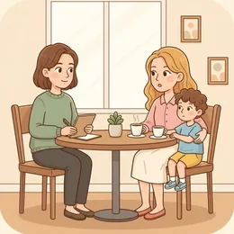

deutschoderwas · Sprechclub · Woche 4 · Strang D · Teil 1 · Dienstag, 6. Oktober
Um Hilfe bitten: klein, konkret, klar
Die meisten bitten zu spät, zu vage und zu groß — und wundern sich, dass niemand hilft. Dabei entscheidet nicht der Mut, sondern der Satzbau: eine Sache, ein Zeitrahmen, eine Frage.
Dein Niveau
Gleiches Thema, andere Sätze. Wechsle jederzeit — probier ruhig beide Seiten aus.
Warum ein „Kannst du mal kurz?“ seltener klappt als man denkt
Wer nicht sagt, was genau, wie lange und bis wann, überlässt dem anderen die ganze Arbeit — nämlich die, das Ausmaß zu erraten. Und im Zweifel schätzt jeder zu groß und sagt nein.
Bittest du leicht um Hilfe oder eher ungern?
Wen fragst du zuerst, wenn du etwas brauchst?
Wann hast du zuletzt jemanden um etwas gebeten?
Warum fällt Bitten vielen schwerer als Helfen?
Ist Um-Hilfe-Bitten in deinem Land ein Zeichen von Schwäche oder von Vertrauen?
Woran merkst du, dass jemand eigentlich nein sagen möchte?
🔑 Die Formel für heute:Eine Sache + ein Zeitrahmen + eine Frage.„Könntest du bis Donnerstag einmal über die zwei Seiten schauen? Zehn Minuten reichen.“ Klein, konkret, und man kann mit einem Wort antworten.
Der Unterschied zwischen Bitte und Erwartung
„Machst du das?“ ist eine Erwartung. „Wäre es möglich, dass du …?“ ist eine Bitte. Der Unterschied ist ein einziger Konjunktiv — und er entscheidet, ob der andere frei antworten kann.
Merkst du den Unterschied zwischen Kannst du und Könntest du?
Welche Form benutzt du selbst häufiger?
Wann wirkt zu viel Höflichkeit unangenehm statt freundlich?
Warum ist eine echte Bitte immer auch die Erlaubnis, nein zu sagen?
💡 Der Test: Kann der andere mit einem einfachen „Nein, das geht bei mir gerade nicht“ antworten, ohne dass es unhöflich wirkt? Wenn ja, war es eine Bitte. Wenn nein, war es Druck.
Zwölf Wörter für den Moment davor
Sagt jedes Wort laut — mit Artikel. Und gleich den Beispielsatz hinterher, damit ihr ihn beim nächsten Mal parat habt.
🙏
die Bitte
„Ich hätte eine kleine Bitte an dich.“
💡 eine Bitte haben und eine Bitte äußern sind die festen Wendungen. Und der Satz Ich hätte eine Bitte ist der beste Einstieg überhaupt.
bitten um
„Ich habe sie um einen Rat gebeten.“
💡 Immer mit um und Akkusativ: um einen Gefallen bitten. Nicht verwechseln mit fragen nach — das bringt eine Information, keine Hilfe.
der Gefallen
„Kannst du mir einen Gefallen tun?“
💡 Man tut jemandem einen Gefallen — nicht macht. Und wer einen bekommt, sagt gern: Ich revanchiere mich.
das Anliegen
„Ich habe ein kurzes Anliegen — passt es gerade?“
💡 Etwas förmlicher als Bitte und deshalb perfekt für Ämter, Vermieter und den Chef. Der Klassiker am Telefon: „Was ist Ihr Anliegen?“

die Unterstützung
„Ohne die Unterstützung meiner Nachbarin hätte ich das nicht geschafft.“
💡 Das Verb ist unterstützen mit Akkusativ: Sie unterstützt mich. Ohne bei — das kommt erst dazu: Sie unterstützt mich bei der Bewerbung.
der Aufwand
„Der Aufwand ist überschaubar — höchstens zehn Minuten.“
💡 Das entscheidende Wort beim Bitten: Wer den Aufwand nennt, nimmt dem anderen die Angst. überschaubar und halbe Stunde sind die nützlichsten Vokabeln dazu.
🎯
konkret
„Sag mir ganz konkret, was du brauchst.“
💡 Das Gegenteil ist vage. In Bitten ist konkret die halbe Miete: „Hilfst du mir mal?“ gegen „Trägst du die eine Kiste hoch?“
die Hemmung
„Ich hatte lange eine Hemmung, sie überhaupt zu fragen.“
💡 Auch die Hemmschwelle — die Schwelle, über die man erst muss. Und ohne jede Hemmung heißt schon fast: unverschämt.
jemandem etwas abnehmen
„Könntest du mir die Protokolle abnehmen?“
💡 Steht mit Dativ für die Person und Akkusativ für die Sache: mir die Protokolle. Der freundlichste Weg, um Entlastung zu bitten.
🏃
einspringen
„Kannst du am Freitag für mich einspringen?“
💡 Trennbar und meist kurzfristig gemeint. Dazu passt der Ausfall: Wegen eines Ausfalls suchen wir jemanden, der einspringt.
🔁
sich revanchieren
„Ich revanchiere mich beim nächsten Mal.“
💡 Aus dem Französischen, im Alltag sehr häufig. Etwas einfacher: Das geht auf mich oder Ich schulde dir was.
die Zusage
„Ihre Zusage kam schneller, als ich gedacht hatte.“
💡 Das Gegenteil ist die Absage — darum geht es am Donnerstag. Die Verben: zusagen und absagen, beide trennbar.
💡 Spiel „Zu groß, zu klein“: Einer nennt eine riesige Bitte („Hilfst du mir beim Umzug?“). Der andere schneidet in fünf Sekunden ein kleines, konkretes Stück heraus („Könntest du am Samstag zwei Stunden die Küche packen?“). Wer nichts Kleineres findet, gibt ab.
Dieselbe Hilfe, drei Zuschnitte
Wie groß eine Bitte wirkt, entscheidet nicht die Sache, sondern die Formulierung. Danach drei Satzpaare, bei denen fast alle danebenliegen.
🪨
Zu groß
unbegrenzt in Zeit und Umfang — der andere muss raten
Hilfst du mir mal mit meiner Bewerbung?
🌫️
Zu vage
man weiß nicht, was zu tun ist und wann
Kannst du da mal drüberschauen?
🎯
Klein und konkret
eine Sache, ein Zeitrahmen, ein Termin
Könntest du bis Donnerstag einmal über die zwei Seiten schauen? Zehn Minuten reichen.
✅ So sagt man es
Könntest du bis Donnerstag einmal über die zwei Seiten schauen?
Warum das stimmtKonjunktiv II (könntest), eine klare Sache (zwei Seiten) und eine Frist (bis Donnerstag). Der andere kann mit einem Wort antworten.
❌ So nicht
Kannst du mir mal bei meiner Bewerbung helfen?
Das Problemmal und Bewerbung sind unbegrenzt. Wer nicht weiß, worauf er Ja sagt, sagt sicherheitshalber Nein — oder gar nichts.
✅ So sagt man es
Sag ruhig ab, wenn es gerade nicht passt.
Warum das stimmtDer Ausstieg gehört zur Bitte dazu. Wer ihn mitliefert, bekommt ehrlichere Zusagen — und öfter welche.
❌ So nicht
Du machst das doch bestimmt, oder?
Das ProblemDas ist keine Bitte, sondern eine Erwartung mit Fragezeichen. Ein Nein wäre danach ein kleiner Affront — genau das will man vermeiden.
✅ So sagt man es
Ich wollte fragen, ob du am Freitag Zeit hättest.
Warum das stimmtDie indirekte Frage mit ob stellt das Verb ans Ende — und wirkt dadurch weicher als die direkte Frage.
❌ So nicht
Ich wollte fragen, ob hättest du am Freitag Zeit.
Das ProblemNach ob darf das Verb nicht nach vorn. Es ist ein Nebensatz — … ob du am Freitag Zeit hättest.
Fünf Schritte, immer in dieser Reihenfolge:
Kurz ankündigen:Ich hätte eine kleine Bitte — dann weiß der andere, was kommt.
Die eine Sache nennen: nicht bei der Bewerbung helfen, sondern über die zwei Seiten schauen.
Den Aufwand nennen:Zehn Minuten reichen. Das ist der Satz, der am häufigsten fehlt.
Eine Frist nennen:bis Donnerstag — ohne Frist landet es ganz unten auf der Liste.
Den Ausstieg anbieten:Sag ruhig ab, wenn es nicht passt. Das kostet nichts und ändert alles.
Und einer geht immer noch dazu: Sag, warum du gerade diese Person fragst.„Du hast den besten Blick für so etwas“ ist kein Schleim, sondern eine Information.
🎯 Zu zweit, eine Minute: Einer sagt eine vage Bitte. Der andere fragt dreimal nach: Was genau? Wie lange? Bis wann? Danach formuliert der Erste sie neu — in einem Satz.
Vier Bausteine einer guten Bitte
Ankündigen, benennen, begrenzen, freistellen. Vier Schritte — und aus einer unangenehmen Frage wird ein Satz, den man leicht beantworten kann.
1 · ✋ Ankündigen Ich hätte eine kleine BitteDarf ich dich um etwas bitten?Hast du kurz eine Minute?
So klingt esIch hätte eine kleine Bitte — hast du kurz eine Minute?
2 · 🎯 Konkret benennen Könntest du …?Würdest du …?Wäre es möglich, dass …?
So klingt esKönntest du einmal über die zwei Seiten schauen?
3 · ⏱️ Begrenzen Zehn Minuten reichenBis Donnerstag würde mir helfenNur die erste Seite
So klingt esZehn Minuten reichen völlig, und bis Donnerstag hätte ich Zeit.
4 · 🕊️ Freistellen Sag ruhig ab, wenn es nicht passtKein Problem, wenn du nicht kannstIch frag sonst jemand anderen
So klingt esSag ruhig ab, wenn es gerade nicht passt — ich frage sonst jemand anderen.
1 · ✋ Den Rahmen setzen Ich habe ein kurzes AnliegenIch weiß, dass du viel zu tun hast, aber …Ich frage dich, weil …
So klingt esIch frage dich, weil du den besten Blick für so etwas hast — es geht um zwei Seiten Text.
2 · 🎯 Präzise bitten Wäre es Ihnen möglich, …?Ich wollte fragen, ob du …Dürfte ich dich bitten, …?
So klingt esIch wollte fragen, ob du bis Donnerstag einmal drüberlesen könntest — vor allem den Schluss.
3 · ⏱️ Den Aufwand einordnen Der Aufwand ist überschaubarEs geht wirklich nur um …Alles Weitere mache ich selbst
So klingt esDer Aufwand ist überschaubar: Es geht nur um den Schluss, alles Weitere mache ich selbst.
4 · 🤝 Gegenseitigkeit zeigen Ich revanchiere mich gernSag Bescheid, wenn du mal …Und wenn es nicht geht, ist das völlig in Ordnung
So klingt esIch revanchiere mich gern — und wenn es diese Woche nicht geht, ist das völlig in Ordnung.
Verb die Bitte Ton und Maß Höflichkeit
📣 Sofort anwenden: Formuliert zu zweit eine echte Bitte, die ihr seit Wochen vor euch herschiebt — in vier Sätzen, einer pro Baustein. Danach sagt ihr sie laut, als wäre die Person da.
Vier Bitten — zwei Runden
Runde 1: Lest den Dialog zu zweit laut. Runde 2: Deckt die Zeilen von B ab und sprecht frei — die Hinweise reichen.
Dialog 1 · „Die Bitte an die Kollegin“
B braucht Hilfe bei einem Text, will die Kollegin aber nicht überfallen.
A
Du wolltest was fragen?
B
Ja, ich hätte eine kleine Bitte. Könntest du bis Donnerstag einmal über zwei Seiten schauen?
🗣️ Ankündigung, dann sofort die konkrete Sache mit Frist. Könntest statt Kannst.tippen = Hilfe zeigen
A
Kommt drauf an, wie lang die zwei Seiten sind.
B
Zehn Minuten reichen. Mir geht es nur darum, ob der Schluss verständlich ist.
🗣️ Aufwand nennen und die Frage eingrenzen — Mir geht es nur darum, ob …tippen = Hilfe zeigen
A
Ah, okay. Das mache ich morgen früh.
B
Super, danke. Und sag ruhig ab, wenn morgen doch alles dazwischenkommt.
🗣️ Der Ausstieg gehört dazu — und macht die Zusage ehrlicher.tippen = Hilfe zeigen
A
Passt schon. Schick es mir einfach rüber.
B
Mache ich gleich. Und wenn du mal etwas gegengelesen brauchst, revanchiere ich mich.
🗣️ sich revanchieren — kein Muss, aber es macht das Bitten leichter.tippen = Hilfe zeigen
Dialog 2 · „Die Nachbarin fragen“
Du brauchst kurzfristig Hilfe von der Nachbarin, die du kaum kennst.
A
Oh, hallo. Alles in Ordnung?
B
Ja, alles gut. Ich hätte nur eine kurze Bitte — hätten Sie vielleicht zwei Minuten?
🗣️ Erst beruhigen, dann fragen. hätten Sie im Konjunktiv wirkt sofort weicher.tippen = Hilfe zeigen
A
Klar, worum geht es denn?
B
Ich bekomme morgen ein Paket und bin bis sechs nicht da. Könnten Sie es annehmen?
🗣️ Erst die Lage, dann die Bitte. Eine Sache, ein Tag, eine Frage.tippen = Hilfe zeigen
A
Morgen bin ich leider auch weg.
B
Kein Problem, dann lasse ich es zur Packstation umleiten. Danke fürs Zuhören.
🗣️ Nein annehmen, ohne nachzubohren — und schon eine Lösung haben.tippen = Hilfe zeigen
A
Übermorgen ginge es aber.
B
Oh, das wäre klasse. Dann melde ich mich heute Abend noch kurz.
🗣️ Wer freundlich abschließt, bekommt oft doch noch ein Angebot.tippen = Hilfe zeigen
Dialog 3 · „Größere Hilfe erbitten“
Es geht nicht um zehn Minuten, sondern um mehrere Wochen. Genau dann muss man besonders klar sein.
A
Du wirktest am Telefon ein bisschen angespannt.
B
Bin ich auch. Ich wollte fragen, ob du mich in den nächsten drei Wochen zweimal die Woche unterstützen könntest.
🗣️ Indirekte Frage mit ob — Verb am Ende. Und der Umfang steht direkt drin.tippen = Hilfe zeigen
A
Womit genau?
B
Mit dem Abholen um vier. Alles andere schaffe ich selbst.
🗣️ Alles andere schaffe ich selbst — dieser Satz begrenzt die Bitte sofort.tippen = Hilfe zeigen
A
Dienstag und Donnerstag würde gehen. Montag nicht.
B
Dienstag und Donnerstag wäre perfekt. Und falls mal etwas dazwischenkommt, sag einfach ab.
🗣️ Das Angebot annehmen, wie es kommt — nicht nachverhandeln.tippen = Hilfe zeigen
A
Machen wir so. Und du sagst Bescheid, wenn es mehr wird.
B
Versprochen. Ehrlich gesagt hatte ich lange eine Hemmung, überhaupt zu fragen.
🗣️ eine Hemmung haben — und dieser ehrliche Nachsatz macht das Gespräch warm.tippen = Hilfe zeigen
Dialog 4 · „Die Bitte an die Vorgesetzte“
B ist überlastet und bittet um Entlastung — sachlich, ohne zu klagen.
A
Sie wollten mich sprechen?
B
Ja, ich habe ein kurzes Anliegen. Es geht um die wöchentlichen Protokolle.
🗣️ ein Anliegen haben ist die förmliche Variante — und nennt sofort das Thema.tippen = Hilfe zeigen
A
Was ist damit?
B
Sie kosten mich pro Woche etwa vier Stunden. Wäre es möglich, sie im Team zu verteilen?
🗣️ Erst die Zahl, dann die Bitte. Wäre es möglich, … zu … ist die höflichste Form.tippen = Hilfe zeigen
A
Und wenn nicht?
B
Dann würde ich vorschlagen, sie auf alle zwei Wochen umzustellen. Beides wäre für mich in Ordnung.
🗣️ Zwei Wege anbieten — dann muss der andere nicht selbst eine Lösung erfinden.tippen = Hilfe zeigen
A
Die zweite Variante klingt machbar.
B
Sehr gern. Ich schreibe das kurz auf und schicke es Ihnen bis Freitag.
🗣️ Selbst den nächsten Schritt übernehmen — so wird aus einer Bitte eine Abmachung.tippen = Hilfe zeigen
🎭 Und jetzt ihr: Spielt Dialog 1 noch einmal — aber A hat sichtbar wenig Zeit und antwortet nur einsilbig. B muss die Bitte trotzdem in drei Sätzen unterbringen: Sache, Aufwand, Frist.
🧩 Höflich bitten: könntest, würdest, wäre, hätte
Ein einziger Konjunktiv verwandelt eine Aufforderung in eine Bitte. Vier Formen reichen — und drei davon sind unregelmäßig, aber sehr kurz.
Der Konjunktiv II ist im Alltag vor allem eine Höflichkeitsform. Bei den meisten Verben nimmt man würde + Infinitiv: Würdest du kurz helfen? Vier Verben haben eigene, sehr häufige Formen: könnte, hätte, wäre, müsste. Damit deckst du fast jede Bitte ab: Könntest du …? · Ich hätte eine Bitte. · Wäre es möglich, dass …? Und wenn du die Bitte noch weicher machen willst, verpackst du sie in eine indirekte Frage: Ich wollte fragen, ob du am Freitag Zeit hättest. Danach steht das Verb am Ende.
🙋könnte = die StandardbitteKönntest du mir kurz helfen?
▾
🤲hätte = die eigene Bitte ankündigenIch hätte eine kleine Bitte an dich.
▾
🕊️wäre = die vorsichtigste FormWäre es möglich, dass du am Freitag einspringst?
▾
❓ob = die indirekte FrageIch wollte fragen, ob du Zeit hättest.
EinleitungIch wollte fragen,
Signalwortob
Wer und wasdu am Freitag Zeit
Verb ans Endehättest.
Vier Formen, die du wirklich brauchst
Lies jede Zeile laut. Es sind nur vier Verben — aber sie stecken in neun von zehn höflichen Sätzen im deutschen Alltag.
🔑
könnte
die häufigste Bitte überhaupt
Könntest du das übernehmen?
🎁
hätte
kündigt die eigene Bitte an
Ich hätte da eine Bitte.
🪶
wäre
am vorsichtigsten — gut bei großen Bitten
Wäre es möglich, dass …?
können → könnte: Könntest du …? · Könnten Sie …?haben → hätte: Ich hätte eine Bitte. · Hättest du Zeit?sein → wäre: Wäre es möglich …? · Das wäre nett.müssen → müsste: Ich müsste dich um etwas bitten.alle anderen → würde + Infinitiv: Würdest du kurz helfen?dürfen → dürfte: Dürfte ich dich kurz stören?
Die Bitte weich machen — und wann es zu viel wird
Es gibt drei Verstärker der Höflichkeit: den Konjunktiv, die indirekte Frage und die kleinen Wörter. Alle drei zusammen sind einer zu viel.
1️⃣
Konjunktiv
aus Aufforderung wird Bitte
Kannst du → Könntest du
2️⃣
Indirekte Frage
noch eine Stufe weicher
Ich wollte fragen, ob …
3️⃣
Kleine Wörter
vielleicht, kurz, mal — eines genügt
Hättest du kurz Zeit?
✅ Könntest du bis Donnerstag drüberschauen?✅ Ich wollte fragen, ob du bis Donnerstag Zeit hättest.✅ Wäre es möglich, dass du am Freitag einspringst?🟡 vielleicht · eventuell · kurz · mal — je eines reicht❌ Könntest du vielleicht eventuell mal kurz …?❌ Du machst das doch bestimmt, oder?
🧱 Bau die Sätze selbst
Tippe die Teile in der richtigen Reihenfolge an. Danach auf „Prüfen“ — und den fertigen Satz laut lesen.
📖 Und jetzt im Zusammenhang
Eine Bitte, die zwei Wochen gedauert hat — und dann zwei Minuten. Wähle in jeder Lücke das passende Wort.
Drei Handgriffe, immer in dieser Reihenfolge:
Setz das Verb in den Konjunktiv: aus Kannst du wird Könntest du, aus Hast du wird Hättest du.
Nenn die Sache und die Grenze: was genau, wie viel Zeit, bis wann. Ohne diese drei bleibt es vage.
Häng den Ausstieg an:Sag ruhig ab, wenn es nicht passt. Damit wird aus Druck eine echte Wahl.
Bei großen Bitten noch eine Stufe:Ich wollte fragen, ob … — dann steht das Verb am Ende.
Ein Satz zum Auswendiglernen, in dem alles steckt: „Ich hätte eine kleine Bitte: Könntest du bis Donnerstag über zwei Seiten schauen? Zehn Minuten reichen, und sag ruhig ab, wenn es nicht passt.“
🎭 Drei Bitten zu zweit
Einer bittet, einer entscheidet frei — auch Nein ist erlaubt. Danach tauschen, und beim zweiten Mal ohne die Stichwörter.
1 · Die kleine Bitte im Büro
A braucht eine Rückmeldung zu einem Text. B ist beschäftigt und antwortet knapp, ist aber grundsätzlich hilfsbereit.
Ich hätte eine kleine BitteKönntest du bis Donnerstag …?Zehn Minuten reichenSag ruhig ab, wenn es nicht passt
Ich frage dich, weil du …Mir geht es nur darum, ob …Alles Weitere mache ich selbstIch revanchiere mich gern
✅ Eine gute Runde enthältA nennt in drei Sätzen Sache, Aufwand und Frist — und bietet einmal ausdrücklich den Ausstieg an. Kein einziges irgendwie und kein mal eben.
2 · Die große Bitte an eine Freundin
A braucht über mehrere Wochen Hilfe. B möchte helfen, kann aber nicht alles — und muss das sagen dürfen.
Ich wollte fragen, ob du …Zweimal die Woche würde reichenAlles andere schaffe ich selbstUnd wenn etwas dazwischenkommt, sag ab
Ich hatte lange eine Hemmung zu fragenWäre es möglich, dass …?Sag mir ruhig, was zu viel istWie sieht es bei dir mit … aus?
✅ Eine gute Runde enthältB darf einen Teil ablehnen, ohne dass A nachverhandelt. Am Ende steht eine konkrete Abmachung mit Tagen und Uhrzeit.
3 · Um Entlastung bitten
A ist überlastet und bittet die Vorgesetzte um eine Veränderung. Klagen ist verboten — es zählen Zahlen und Vorschläge.
Ich habe ein kurzes AnliegenEs kostet mich pro Woche etwa …Wäre es möglich, …?Ich schreibe das bis Freitag auf
Ich würde zwei Wege vorschlagenBeides wäre für mich in OrdnungDürfte ich Sie um eine Entscheidung bis … bitten?Was bräuchten Sie dafür von mir?
✅ Eine gute Runde enthältA nennt eine Zahl, macht zwei Lösungsvorschläge und übernimmt den nächsten Schritt selbst. Kein Satz beginnt mit immer oder nie.
🎴 Sprechkarten
Zieh eine Karte und sprich mindestens vier Sätze am Stück.
Deine Aufgabe
Tippe auf den Knopf.
⏱️ Die 90-Sekunden-Challenge
Ein Wort, anderthalb Minuten, freies Sprechen. Es muss nicht perfekt sein — es muss nur weitergehen.
Dein Wort
die Bitte
1:30
Erzähl es als kleine Geschichte, dann trägt sich die Zeit von selbst:
Worum ging es? Ich brauchte damals …
Wen hast du gefragt? Am Ende habe ich … gefragt, weil …
Wie hast du es gesagt? Ich habe gefragt, ob …
Und wie ging es aus? Sie hat … und danach …
Und wenn dir ein Wort fehlt: beschreib die Situation. „Ich brauchte jemanden, der …“ reicht völlig aus.
⏱️ Spielregel: In jeder Runde muss einmal ein Konjunktiv (könnte, hätte, wäre) und einmal eine Zeitangabe vorkommen. Der Partner hebt die Hand, sobald beides da war.
✅ Sitzt es schon?
8 Fragen. Tippe auf deine Antwort — die Erklärung kommt sofort.
✍️ Lückentext
Wähle in jeder Lücke das passende Wort.
📣 Danach laut: Sagt reihum eine direkte Aufforderung („Mach das bitte.“). Der Nachbar formt sie sofort in eine echte Bitte um — mit Konjunktiv, Grenze und Ausstieg. Wer nur bitte anhängt, gibt weiter.
📮 Deine Hausaufgabe bis Donnerstag
Vier kleine Aufgaben, zusammen etwa 25 Minuten. Am Donnerstag geht es weiter: Was sagst du, wenn die Antwort nein ist?
💡 Warum das hilft: Wer gut bitten kann, bekommt öfter Hilfe — und muss seltener bitten. Und der Konjunktiv der Höflichkeit ist die Form, die man im Alltag am häufigsten braucht.
0 von 0 Aufgaben geschafft.
So sehen die Umformungen aus:
Mach das bitte. → Könntest du das übernehmen? → Ich wollte fragen, ob du das übernehmen könntest.
Hilf mir. → Würdest du mir kurz helfen? → Ich wollte fragen, ob du mir kurz helfen würdest.
Schick mir die Datei. → Könntest du mir die Datei schicken? → … ob du mir die Datei schicken könntest.
Komm am Freitag. → Hättest du am Freitag Zeit? → … ob du am Freitag Zeit hättest.
Übernimm den Termin. → Wäre es möglich, dass du den Termin übernimmst?
Achte bei der indirekten Frage auf das Verb: Es steht ganz am Ende — … ob du das übernehmen könntest. Genau hier stolpern die meisten.
Dieselbe Bitte, drei Nähen:
Zur Freundin: Du, hättest du Donnerstag zehn Minuten? Ich bräuchte einen Blick auf zwei Seiten Text.
Zum Kollegen: Ich hätte eine kleine Bitte — könntest du bis Donnerstag einmal über zwei Seiten schauen? Zehn Minuten reichen.
Zur Vorgesetzten: Ich habe ein kurzes Anliegen. Wäre es möglich, dass Sie bis Donnerstag einen Blick auf den Abschnitt werfen?
Gleich bleibt: die eine Sache, der Aufwand, die Frist.
Anders wird: die Anrede, die Länge des Vorlaufs und wie deutlich der Ausstieg angeboten wird.
Je größer die Distanz, desto mehr Rahmen — aber die Sache bleibt genauso klein. Wer bei der Chefin plötzlich vage wird, bekommt auch dort keine Zusage.
📬 Abgabe: Schick deine Sprachnachricht bis Sonntag in die WhatsApp-Gruppe. Ich höre jede an und antworte dir persönlich.
🔜 Am Donnerstag, Teil 2:Wenn die Antwort nein ist — ein Nein annehmen, ohne beleidigt zu sein, und die Tür für das nächste Mal offen lassen.